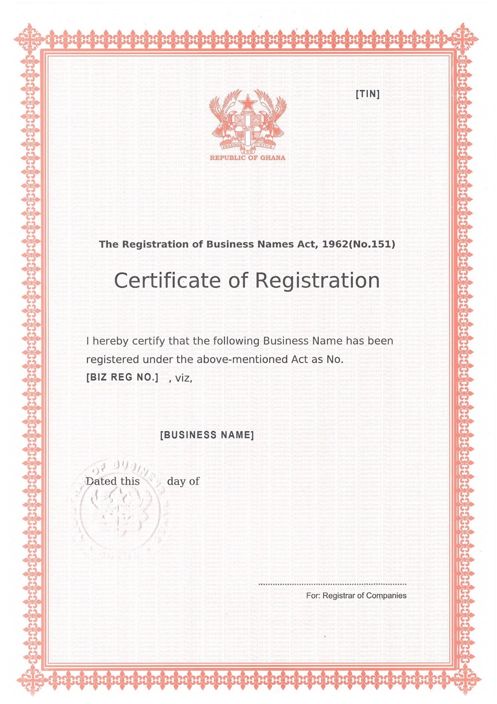
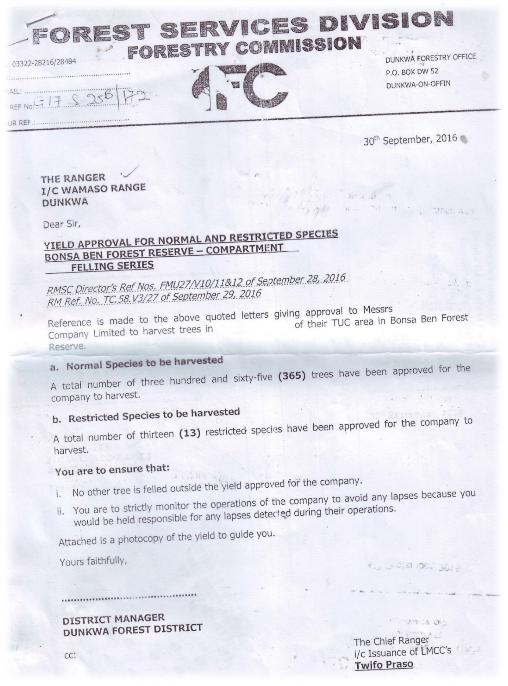
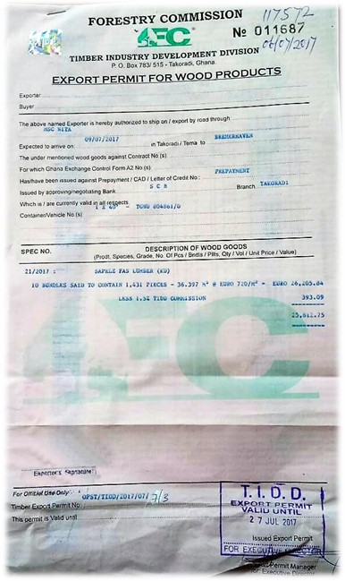

Implementing Timber Leglity Assurance Systems
A guide to comply with timber legality requirements in Ghana and to support due diligence


GHANA
Quy định gỗ hợp pháp của Ghana
Ghana đã ký Hiệp định Đối tác Tự nguyện với Liên minh Châu u. Định nghĩa về tính hợp pháp và các công cụ được sử dụng để đảm bảo tính hợp pháp của các tổ chức, cá nhân trong lĩnh vực lâm nghiệp được nêu trong Phụ lục II của Hiệp định. Nó là một ma trận pháp lý bao hàm bảy nguyên tắc: nguồn gỗ, cấp quyền đối với gỗ, hoạt động khai thác gỗ, vận chuyển, chế biến, thương mại và nghĩa vụ tài chính. Bằng cách nhận thức được các quy định pháp luật ở Ghana được nêu rõ dưới đây, các cơ quan thực thi pháp luật và các nhà nhập khẩu có thể thực hiện các biện pháp kiểm soát để thúc đẩy gỗ được khai thác, vận chuyển và buôn bán hợp pháp từ Ghana. Các nhà nhập khẩu và cơ quan xác minh có thể tham khảo hoặc sử dụng thông tin này trong việc thực hiện trách nhiệm giải trình.
Gợi ý xây dựng và thực hiện trách nhiệm giải trình cho các nhà nhập khẩu
Trách nhiệm giải trình là gì?

Phát triển hệ thống trách nhiệm giải trình
Thực hiện trách nhiệm giải trình
Các tài liệu sau đây được chọn theo định nghĩa gỗ hợp pháp của Ghana và/ hoặc các quy định pháp luật trong các giai đoạn khác nhau của chuỗi cung ứng.
Giấy chứng nhận đăng ký kinh doanh
Giấy chứng nhận đăng ký kinh doanh do pháp nhân đăng ký kinh doanh ký, đóng dấu. Cần kiểm tra chữ ký, con dấu của người đăng ký công ty hoặc người được chỉ định, tên doanh nghiệp, ngày đăng ký trên giấy chứng nhận.
Hợp đồng sử dụng gỗ (TUC)
Hợp đồng sử dụng gỗ phải do Bộ trưởng Bộ Đất đai và Tài nguyên thiên nhiên ký, đóng dấu, cấp cho tất cả các tổ chức chặt hạ gỗ (không thuộc đồn điền tư nhân). Cần kiểm tra TUC được Quốc Hội phê chuẩn, thời hạn, chữ ký, con dấu của Bộ trưởng trên hợp đồng.
Thư phê duyệt sản lượng theo Giấy phép loài gỗ hạn chế
Thư phê duyệt phải do Cục trưởng Cục Dịch vụ Lâm nghiệp khu vực ký, đóng dấu cấp cho chủ sở hữu chặt hạ gỗ, trừ khai thác gỗ trục vớt. Cần kiểm tra tên chủ sở hữu, chữ ký, con dấu, số lượng thân cây, vị trí cây trên thư phê duyệt.
Thỏa thuận Trách nhiệm Xã hội (SRA)
Thỏa thuận trách nhiệm xã hội do đại diện của các công ty khai thác gỗ, các cộng đồng, người làm chứng (Hội đồng cấp quận) và cán bộ của Cục Dịch vụ Lâm nghiệp ký. Cần kiểm tra chữ ký của cán bộ FSD và các bên tham gia, kế hoạch làm việc cho SRA.
Thỏa thuận Trách nhiệm Xã hội (SRA)
Thỏa thuận trách nhiệm xã hội do đại diện của các công ty khai thác gỗ, các cộng đồng, người làm chứng (Hội đồng cấp quận) và cán bộ của Cục Dịch vụ Lâm nghiệp ký. Cần kiểm tra chữ ký của cán bộ FSD và các bên tham gia, kế hoạch làm việc cho SRA.
Giấy phép xuất khẩu CITES
Giấy phép xuất khẩu CITES phải do Cục Động thực vật hoang dã thuộc Ủy ban Lâm nghiệp ký, đóng dấu, cấp cho nhà xuất khẩu các loài gỗ CITES. Cần kiểm tra tính hợp lệ, chữ ký và con dấu, tên của chủ gỗ trên giấy phép.

Giấy chứng nhận thanh toán thuế
Giấy chứng nhận thanh toán thuế phải do Cục trưởng Cục Thuế Ghana (GRA) hoặc người được ủy quyền ký, đóng dấu, cấp cho pháp nhận kinh doanh đã hoàn thành nghĩa vụ thuế. Cần kiểm tra tên người nộp thuế, biểu tượng nổi của GRA, thời hạn, chữ ký và con dấu trên giấy chứng nhận.
Bản sao kê tài khoản của chủ gỗ
Bản sao kê tài khoản của chủ gỗ phải do Kế toán Cục Dịch vụ Lâm nghiệp cấp quận/huyện ký, đóng dấu, cấp cho chủ gỗ. Cần kiểm tra tên chủ gỗ, thời gian báo cáo, số dư gần nhất trên bản sao kê.
Giấy phép xuất khẩu
Giấy phép xuất khẩu phải do Cục trưởng Cục Phát triển Công nghiệp Gỗ (TIDD) thuộc Ủy ban Lâm nghiệp ký và đóng dấu, cấp cho tất cả các nhà xuất khẩu gỗ (đường biển và đường bộ) trừ các lô hàng mẫu xuất khẩu (nhỏ hơn 1 mét khối). Cần kiểm tra chữ ký, con dấu của TIDD, ngày ký, cần đối chiếu với tên của chủ gỗ.
Giấy chứng nhận đăng ký và gia hạn
Giấy chứng nhận đăng ký và gia hạn phải do Chánh Thanh tra Cục Thanh tra Nhà máy, Bộ Việc làm và Quan hệ lao động ký, đóng dấu, cấp cho các nhà máy, cơ sở chế biến gỗ, văn phòng, cửa hàng. Cần kiểm tra thời hạn, chữ ký, con dấu, bản chất công việc, tên pháp nhân trên giấy chứng nhận.
Phê duyệt Tuyên bố tác động môi trường (Đánh giá tác động môi trường và Đánh giá tác động môi trường sơ bộ)
Tuyên bố tác động môi trường phải do Cục trưởng Cục Bảo vệ môi trường ký và đóng dấu phê duyệt. Cần kiểm tra thời điểm thực hiện đánh giá, chữ ký và đóng dấu, tên của chủ dự án trên quyết định phê duyệt. Có thể xem các quy định trực tuyến tại http://www.epa.gov.gh/epa/regulations
Giấy phép môi trường
Giấy phép môi trường được Cục trưởng Cục Bảo vệ môi trường hoặc được ủy quyền cho Trưởng Phòng Đánh giá và kiểm toán Môi trường ký và đóng dấu. Giấy phép môi trường được xem là giấy phép tạm thời, cần được thay thế bằng giấy chứng nhận môi trường. Cần kiểm tra thời hạn, chữ ký và con dấu, tên của chủ dự án trên giấy phép.
Chứng nhận thanh toán An sinh xã hội và Ủy thác Bảo hiểm Quốc gia (SSNIT)
Chứng nhận thanh toán SSNIT phải do Giám đốc chi nhánh SSNIT theo ủy quyền của Tổng giám đốc SSNIT ký, đóng dấu cấp cho tất cả các doanh nghiệp sử dụng lao động. Cần kiểm tra số lượng công nhân, thông tin phù hợp giấy chứng nhận đăng ký doanh nghiệp, chữ ký, con dấu của SSNIT.
Hợp đồng lao động
Hợp đồng lao động do công ty lập ra và có chữ ký của người sử dụng lao động và người lao động. Cần kiểm tra nội dung hợp đồng, thông tin, chữ ký và con dấu đầy đủ, chính xác.